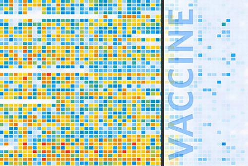
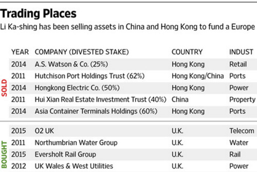

Tech: ES6, Gulp, Highcharts, lazysizes, lodash, ScrollMagic

Tech: Excel, Handlebars, Highcharts
Tech: Handlebars, Waypoints
Tech: Compass, Handlebars, lodash
Tech: Custom Font, Excel, Handlebars, Highcharts, Moment
Tech: Excel, Handlebars, Highcharts, Moment
Tech: bxSlider, Handlebars, jQuery UI, PHP

Tech: Excel, Illustrator
Tech: Bootstrap, Handlebars, Highcharts, slick
Tech: Bootstrap, Excel, Handlebars, Highcharts, lodash, Moment